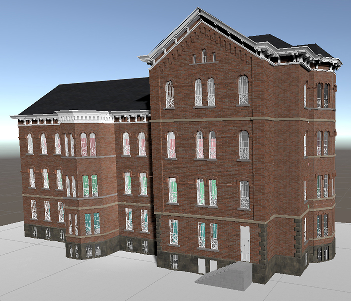
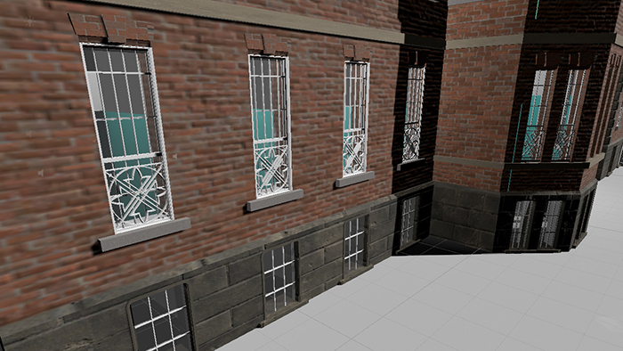
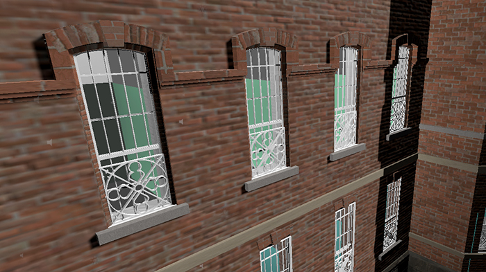
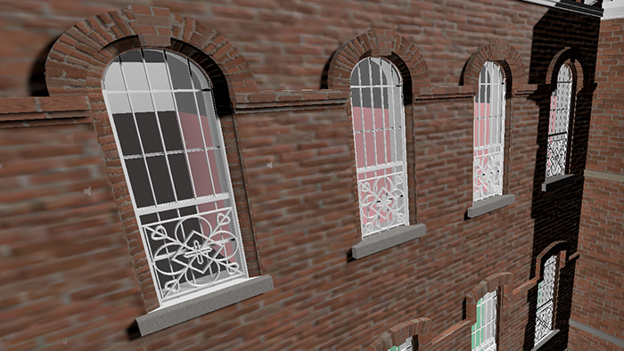
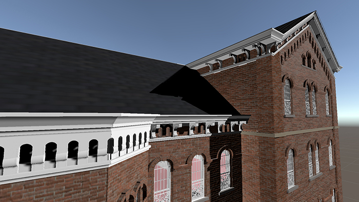
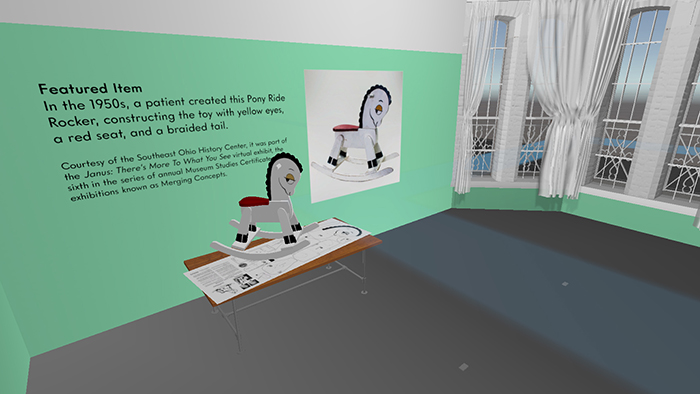
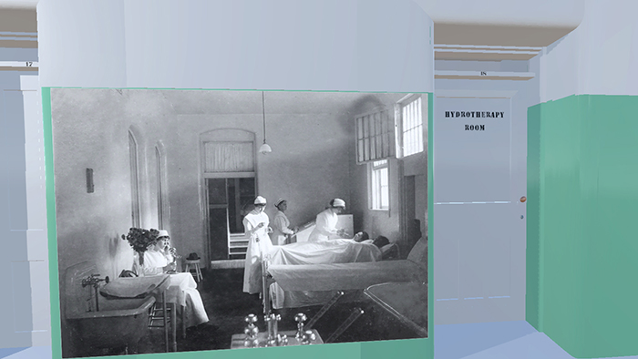
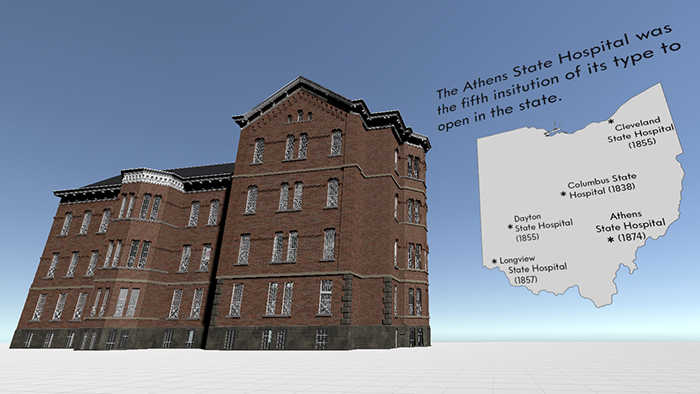

- PRACTICAL TIME TRAVEL: THE RIDGES -
Practical Time Travel: The Ridges is an immersive user agency-centered experience providing facts about the history of the Athens State Hospital;
some of the people who worked and lived there; the architecture; and industries related to the site.
Through virtual reality, participants can learn historic facts, about motivations of those that lived in the past,
and how multiple elements of life and culture are connected through activities involving trial and error, exploration, and puzzle-solving.
GALLERY
1 / 9

Full model of Building No. 4 of the Athens State Hospital in Unity.
2 / 9

Floor 1 window detail of the final model.
3 / 9

Floor 2 window detail of the final model.
4 / 9

Floor 3 window detail of the final model.
5 / 9

Decorative roof detail of the final model.
6 / 9

Interior door example. There were five types of doors.
Each provided the patients more autonomy the closer to the center of the full site.
Each provided the patients more autonomy the closer to the center of the full site.
7 / 9

Example of an item and related fact.
Items were related to real historical items available at local museums and exhibitions.
Items were related to real historical items available at local museums and exhibitions.
8 / 9

Example of an interior wall image to provide visual context to the facts and locations.
All images are linked to local museums and exhibitions.
All images are linked to local museums and exhibitions.
9 / 9

Example of an outdoor fact. Symbols on the ground show locations where the facts will appear.
TECHNOLOGY + MEDIUMS USED
SHOWN AT THE FOLLOWING...
RELATED SOCIAL MEDIA
CREDIT AND SPECIAL THANKS